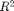
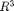
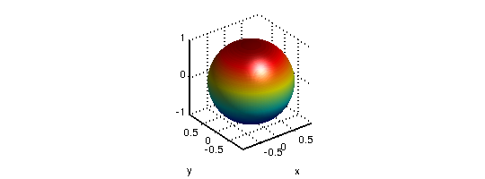
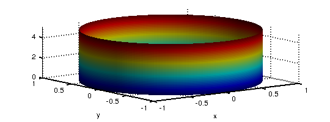
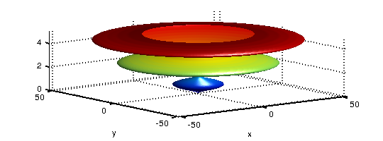
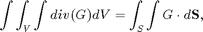
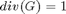

CHEBFUN2 GUIDE 6: 2D SURFACES IN 3D SPACE
A. Townsend, March 2013
Contents
6.1 REPRESENTING PARAMETRIC SURFACES
In Chapter 5, we explored chebfun2v objects with two components, but Chebfun2 can also work with functions with three components, i.e., functions from a rectangle in  into . For example, we can represent the unit sphere via spherical coordinates as follows:
th = chebfun2(@(th,phi) th, [0 pi 0 2*pi]);
phi = chebfun2(@(th,phi) phi, [0 pi 0 2*pi]);
x = sin(th).*cos(phi);
y = sin(th).*sin(phi);
z = cos(th);
F = [x;y;z];
surf(F), camlight, axis equal
 Above, we have formed a chebfun2v with three components by vertical concatenation of chebfun2 objects. However, for familiar surfaces such as cylinders, spheres, and ellipsoids Chebfun2 has overloaded the commands CYLINDER, SPHERE, and ELLIPSOID to generate these surfaces more easily. For example, a cylinder of radius 1 and height 5 can be constructed like this:
h = 5; r = chebfun(@(th) 1+0*th,[0 h]); F = cylinder(r); surf(F), camlight
An important class of parametric surfaces are surfaces of revolution, which are formed by revolving a curve in the left half plane about the z-axis. The CYLINDER command can be used to generate surfaces of revolution. For example:
f = chebfun(@(t) (sin(pi*t)+1.1).*t.*(t-10),[0 5]); F = cylinder(f); surf(F), camlight
6.2 SURFACE NORMALS AND DIVERGENCE THEOREM
Given a chebfun2v representing a surface, the normal can be computed by the Chebfun2v NORMAL command. Here are the unit normal vectors of a torus:
r1 = 1; r2 = 1/3; % inner and outer radius d = [0 2*pi 0 2*pi]; u = chebfun2(@(u,v) u,d); v = chebfun2(@(u,v) v,d); F = [-(r1+r2*cos(v)).*sin(u); (r1+r2*cos(v)).*cos(u); r2*sin(v)]; % torus surf(F), camlight, hold on quiver3(F(1),F(2),F(3),normal(F,'unit'),'numpts',10) axis equal, hold off
Error using chebfun2v/normal (line 22) Normal vector is zero Error in guide6 (line 54) quiver3(F(1),F(2),F(3),normal(F,'unit'),'numpts',10)
Once we have the surface normal vectors we can compute, for instance, the volume of the torus by applying the Divergence theorem: $ where . Instead of integrating over the 3D volume, which is currently not possible in Chebfun2, we integrate over the 2D surface:
G = F./3; % full 3D divergence of G is 1 because F = [x;y;z].
integral2(dot(G,normal(F)))
exact = 2*pi^2*r1*r2.^2
Chebfun2v objects with three components come with a warning. Chebfun2 works with functions of two real variables and therefore, operations such as curl and divergence (in 2D) have little physical meaning to the represented 3D surface. The reason we can compute the volume of the torus (above) is because we are using the Divergence Theorem and circumventing the 3D divergence.
To finish this section we represent the Klein Bagel. The solid black line shows the parameterisation seam and is displayed with the syntax surf(F,'-'). See [Platte March 2013] for more on parameterised surfaces.
u = chebfun2(@(u,v) u, [0 2*pi 0 2*pi]); v = chebfun2(@(u,v) v, [0 2*pi 0 2*pi]); x=(3+cos(u/2).*sin(v)-sin(u/2).*sin(2*v)).*cos(u); y=(3+cos(u/2).*sin(v)-sin(u/2).*sin(2*v)).*sin(u); z=sin(u/2).*sin(v)+cos(u/2).*sin(2*v); surf([x;y;z],'-k','FaceAlpha',.6), camlight left, colormap(hot) axis tight equal off
6.3 REFERENCES
[Platte March 2013] R. Platte, Parameterizable surfaces, Chebfun2 Example: http://www2.maths.ox.ac.uk/chebfun/examples/geom/html/ParametricSurfaces.shtml